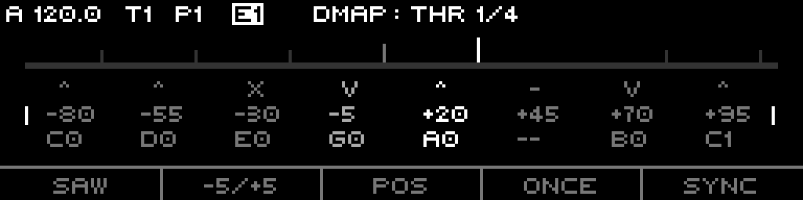
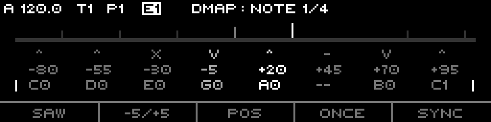
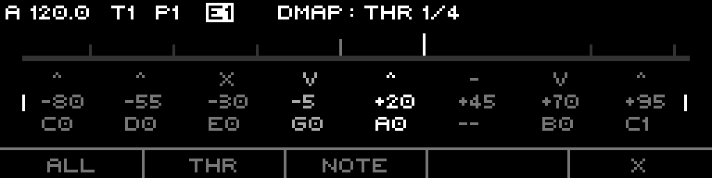
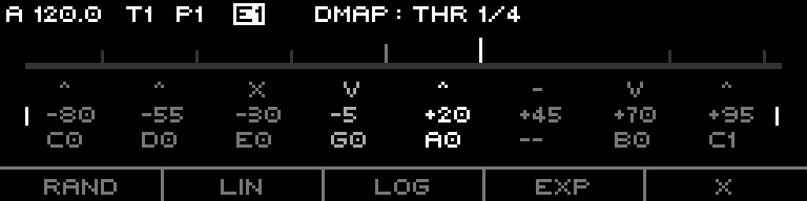
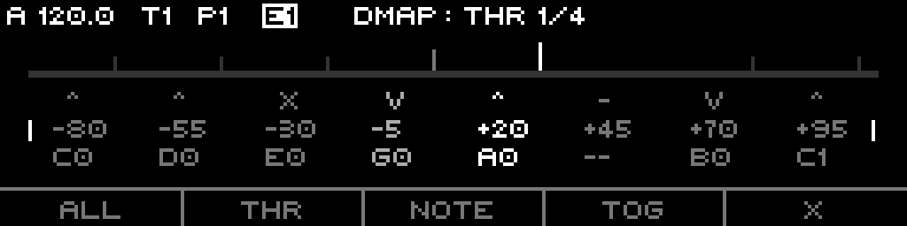
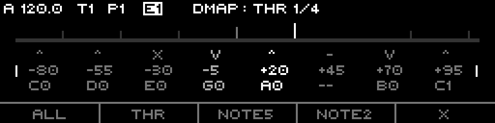

A threshold map. One moving input scans 32 stages; whichever threshold it crosses fires that stage's note and gate. Drive it from an internal ramp for melody, or from external CV for quantizing.
The Discrete track does not step through a sequence of notes. It watches one moving input — an internal ramp or an external CV — and fires one of up to 32 stages whenever that input crosses the stage's threshold in the stage's direction. The stage that fires emits a note (CV) and a gate. Sweep the input and the map plays back as a melody; drive it from outside and the same map becomes a quantizer / CV shaper.
It is a stateless ramp engine. Nothing is remembered between ticks: each tick recomputes the ramp phase from the clock position, compares the current input against the previous input, and lets any crossed threshold claim the active stage. Pause, reset, or change pattern and the whole picture rebuilds from the clock.
Everything here is grounded in the firmware as built — defaults, ranges, enum members, key bindings, and step-grid maps come from the model, engine, and UI code.
The track owns 32 stages. Each stage holds three things:
A single moving input scans the window. When it crosses a stage's threshold in that stage's direction, that stage becomes the active stage: its note converts to output CV and a gate fires. The active stage holds until another stage's threshold is crossed (an Off active stage releases to silence).
The input comes from one of three clock sources:
The internal ramp always spans the full ±5V, regardless of the Above/Below range — the range only moves where the thresholds sit, not where the ramp goes. Internal Saw rises linearly −5V→+5V then snaps back; Internal Tri rises −5V→+5V over the first half of the period and falls +5V→−5V over the second.
Period in ticks is divisor ÷ (clock multiplier as a fraction): a higher clock multiplier shortens the period (faster sweeps), a higher divisor lengthens it. External ignores the internal ramp and reads the DMap Input route value (clamped −5V..+5V) as the live input each tick.
Loop (default) cycles the ramp forever. Once sweeps a single period, then holds its final value (+5V, phase 1.0) and stops until a reset or a Loop↔Once toggle restarts it.
| Direction | Fires when | OLED / LED |
|---|---|---|
| Rise | input crosses from below to at/above the threshold | ^ / green |
| Fall | input crosses from above to at/below the threshold | v / red |
| Both | either edge crosses the threshold | x / yellow |
| Off | never; stage disabled | - / unlit |
Stages are scanned in index order and the first crossing wins. A stage stays active until some other stage is crossed. The init/default direction is Off.
The Above (rangeHigh) and Below (rangeLow) params define the voltage window the thresholds live in. The mode decides how each stage's −100..+100 maps into that window:
| Mode | Default | Mapping |
|---|---|---|
| Position | yes | Each stage's −100..+100 maps linearly to Below..Above. 0 lands at the midpoint; each threshold is an absolute trigger voltage. |
| Length | — | Each stage's value is a proportional length. The values become cumulative interval ends across the window, partitioning the span by weight. All stages at −100 → even distribution. |
Changing the range or the mode marks the threshold cache dirty and recomputes on the next tick.
A stage's note index (−63..+63) is a scale degree. Output volts come from the sequence's selected scale: noteToVolts(noteIndex + octave·notesPerOctave + transpose). On a chromatic scale the root note adds root × (1/12) volts. The Offset param adds a flat CV bias (centivolts ×0.01 = volts) on top of the resolved note.
The CV Update mode (track-scope) decides when pitch params are read:
When a new stage becomes active, a gate fires for a length derived from the step. Gate Len 0% = "T" is a fixed short pulse (a few ticks), independent of step length; 1..100% is that percentage of the step's tick length.
Slew (0 = Off, 1..100%) smooths CV between stages by limiting the pitch rate — up to 48 semitones/sec at Slew=1 (fast), scaling down to a slow glide near Slew=100. With Slew off the CV jumps instantly. Slew enabled also flags the outgoing MIDI note as a slide.
Pluck (−100..+100, 0 = Off) adds a pitch transient at note onset. The note starts bent away from its target and decays linearly back to pitch:
| Param | Default | Range / members |
|---|---|---|
| Clock | Internal Saw | Internal Saw / Internal Tri / External |
| Divisor | 192 | 1..768 |
| Clock Mult | 1.00x | 0.50x..1.50x (50..150%) |
| Gate Len | T (0%) | 0..100% |
| Loop | Loop | Loop / Once |
| Reset Measure | 8 bars | off / 1..128 bars |
| Sync | Off | Off / Reset (External retired → behaves as Off) |
Sync = Reset realigns the ramp to a bar boundary every Reset Measure bars (a reset re-zeros the ramp to −5V/phase 0 and clears stage/CV/gate/pluck state). The legacy External sync member is inert — re-anchor from outside via a Reset route instead.
Play Mode (track-scope) is Aligned (ramp phase locks to the bar grid) or Free (ramp runs from its own free clock position).
Page+S0 opens the Discrete edit page (header DMAP). It draws a threshold bar across the top, a live input cursor, and a three-row info block for the eight stages of the current section. Four sections of eight stages each; LEFT / RIGHT step through them.

DMAP: THR). Top bar = per-stage thresholds with the live input cursor (tall, bright). Rows: direction (^ Rise, v Fall, x Both, - Off), threshold, note. The active stage is brightest; the side brackets mark the threshold row.
DMAP: NOTE) — encoder press toggles modes; the side brackets drop to the note row. Off stages show --.| Key | Shows | Press |
|---|---|---|
| F1 | SAW / TRI / EXT | cycle clock source |
| F2 | range-macro name (e.g. -5/+5) | advance to next range macro |
| F3 | POS / LEN | toggle Position / Length threshold mode |
| F4 | LOOP / ONCE | toggle loop mode |
| F5 | sync short (OFF / RM) | cycle sync mode |
The F2 range macros snap Above/Below to a preset window:
| Macro | Above / Below | Macro | Above / Below |
|---|---|---|---|
| Full | −5 / +5 | Btm | −5 / −4 |
| Inv | +5 / −5 | Ass | −1 / +4 |
| Pos | 0 / +5 | BAss | +3 / −2 |
| Neg | −5 / 0 | Top | +4 / +5 |
Two rows of 8, acting on the eight stages of the current section:
THR BETWEEN). Shift + double-click selects all stages with the same value (note value in note-edit mode, otherwise threshold).Pressing the encoder toggles the edit mode between Threshold and Note. It then edits the selected stage(s):
The OLED threshold bar marks each non-Off stage as an upward tick (tallest = active, mid = selected) and draws the live input as a bright cursor. The info block shows direction char / threshold / note name per stage, the active stage brightest.
The context-menu key opens: INIT, COPY, PASTE, GEN.
ALL / THR / NOTE / (blank) / X. ALL clears the whole sequence (re-seeds the fret-pattern thresholds, all stages Off, notes 0); THR re-seeds thresholds only; NOTE zeroes notes.
ALL / THR / NOTE / (blank) / X.GEN runs in two footer steps. First a kind: RAND / LIN / LOG / EXP / X. Then a target:
ALL / THR / NOTE / TOG / X (TOG randomizes directions).ALL / THR / NOTE5 / NOTE2 / X — NOTE5 spreads notes wide (−63..+64), NOTE2 narrow (0..+32). Threshold shaping is linear / √ / ^1.3 across −99..99.
RAND / LIN / LOG / EXP / X.
ALL / THR / NOTE / TOG / X.
ALL / THR / NOTE5 / NOTE2 / X.| Combo | Action |
|---|---|
| Page+S9 | Range High (Above) |
| Page+S10 | Range Low (Below) |
| Page+S11 | Divisor |
| Page+S12 | Piano voicing (held; encoder scrolls bank, release applies) |
| Page+S13 | Guitar voicing (held; encoder scrolls bank, release applies) |
Range High / Low / Divisor open the standard quick-edit overlay. Voicing quick-edits apply a chord shape across the active stages (selection-limited if more than one selected); the selected stage's note is the root, C0 resets from the track/project root, ROOT is a safe no-op.
Four step combos open threshold/note macro menus (yellow LEDs):
I-8, I-5(2), I-7(3), I-9(4), I-FRET. Even-distribute thresholds across stage groups; I-FRET round-robin interleaves across the four sections.M-CLUSTER, M-AR4, M-SWELL, M-ISWELL, M-STRUM. Operate on active stages (selection-limited if more than one selected).E-ACT, E-RISE, E-FALL, E-BOTH, NORM. Even-spread thresholds by direction filter; NORM expands the current spread to fill −100..+100.FLIP, T-REV, T-INV, N-MIRR, N-REV. FLIP cycles all directions; T-* transform thresholds; N-* transform note indices.The DMap Scan route lets an external CV reshape the map live. Route a CV source to DMap Scan (value 0..34):
0 = bottom dead zone, 1..32 = stages 0..31, 33/34 = top dead zone.Sweep a fader or slow LFO across the scan input to "draw" directions across the map in real time. The dead zones at the extremes toggle nothing.
Track-wide params, hosted by the generic Track page:
Per-pattern params, in order: Clock, Sync, Divisor, Clock Mult, Gate Len, Loop, Reset Measure, Threshold (mode), Above, Below, Scale, Root, Scale Rotate, Slew, Pluck, Octave, Transpose, Offset.
| Param | Default | Range |
|---|---|---|
| Divisor | 192 | 1..768 |
| Clock Mult | 1.00x | 50..150% |
| Gate Len | T (0%) | 0..100% |
| Reset Measure | 8 bars | off / 1..128 |
| Above (rangeHigh) | +5.0V | −5.0..+5.0V |
| Below (rangeLow) | −5.0V | −5.0..+5.0V |
| Scale | Project | Project / track scales |
| Root | C (0) | 0..11 (C..B) |
| Scale Rotate | Default | Default / 0..31 |
| Slew | Off | 0..100% |
| Pluck | Off | −100..+100 |
| Octave | 0 | −10..+10 |
| Transpose | 0 | −60..+60 |
| Offset | +0.00V | −5.00..+5.00V (−500..+500 cV) |
Routing targets exposed for a Discrete track:
DMap Input — the External-mode input CV (−5..+5V).DMap Scan — the scanner (0..34, cycles stage directions).DMap Above (rangeHigh) and DMap Below (rangeLow) (−5..+5V).DMap Sync is retired (folds into the universal Align/Reset). Pluck and Gate Length are not routable.INIT (ALL) re-seeds every stage with an interleaved fret-pattern threshold distribution — round-robin across the four sections, ~6.5 units apart overall — with all directions Off and all notes 0. Enabling a stage (changing its direction) lights up a pre-spaced threshold without re-placing it.